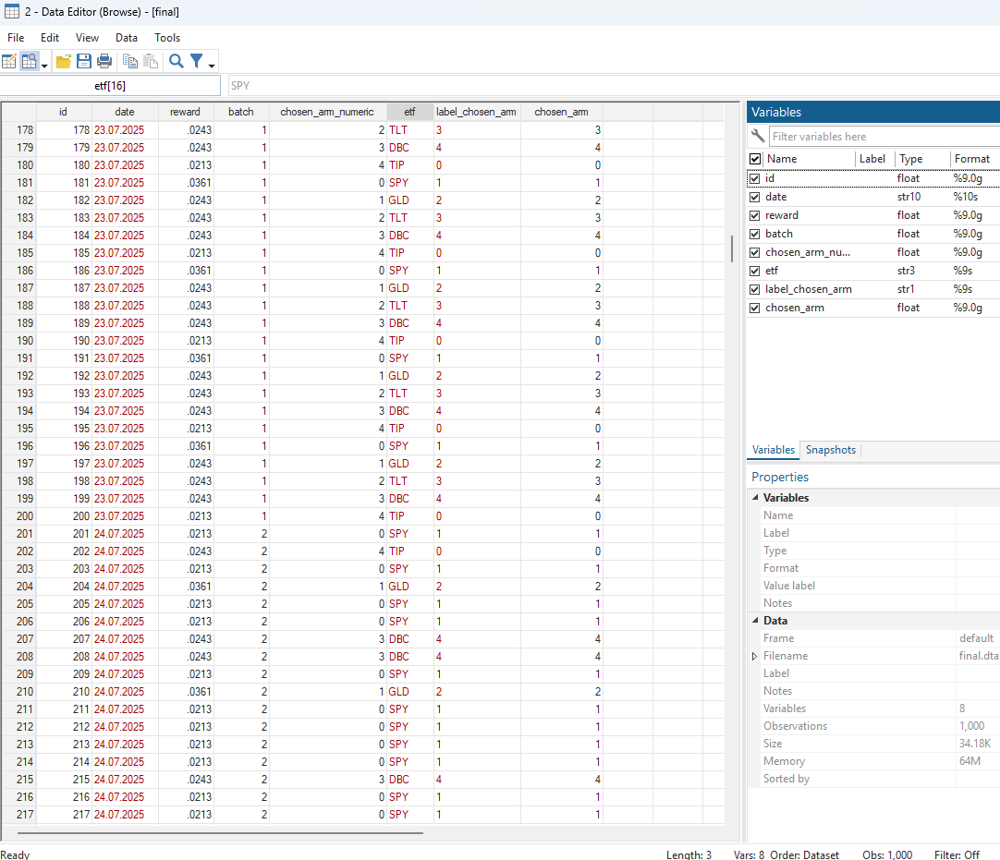
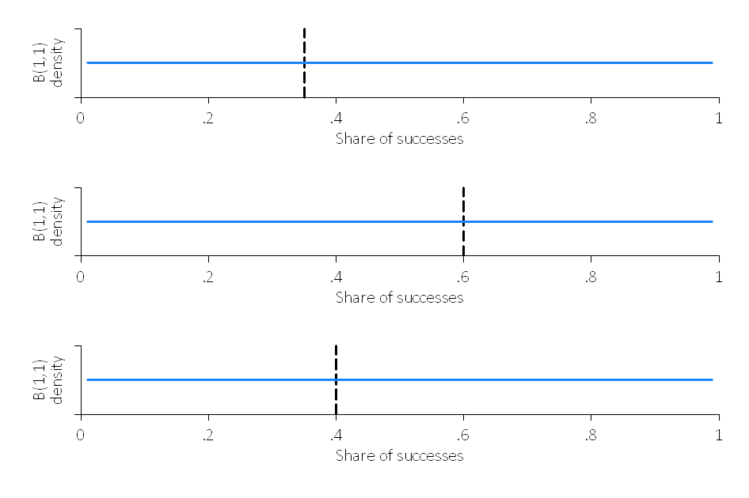
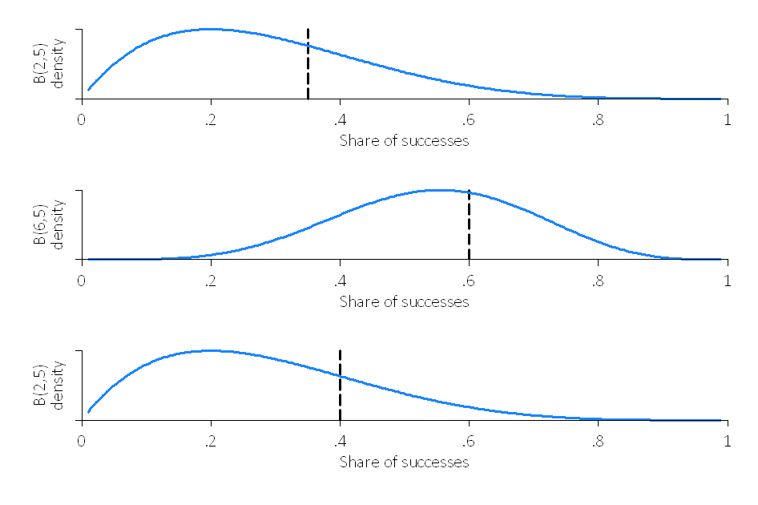

In this project, you will implement Multi-Armed Bandit algorithms. You will use first epsilon-greedy (from lecture) to build a portfolio of stocks adaptively at a daily frequency. Then, you will use Thompson Sampling (from lecture) to compare the performance and some properties of the algorithms.
The code for this project contains the following files, which are available as a zip archive.
bbandit_functions.pybbandit_initialize.adobbandit_update.adobbandit_sim.adobbandits.adoFiles to Edit and Submit: You will collect data adaptively and generate tables and figures during the assignment. You should submit these files with your code and comments. Please send tables and figures in a single pdf or html, e.g., data.csv, assignment_1_solutions.pdf. Please do not change the other files in this distribution or submit any of our original files other than these files.
Commenting: In this assignment we ask you to provide extensive commenting on the exhibits (data, tables, and figures, code) you generate. For each exhibit that you implement, provide (a) an overall comment that should describe it purpose AND roughly how it was computed, and (b) a per-exhibit comment (table or figure notes), describing very briefly what each exhibit is showing. Each per-exhibit comment can simply be a phrase at the end of your exhibit. However, you are also welcome to add separate comment lines. A portion of the project grade (3 points out of 28) will be based on an inspection of your comments in the submitted files.
Stata or Python EITHER use Stata (easier) OR Python (harder). We will use Python later, so to get an easy start, we recommend Stata. Your choice!
Getting Help You are not alone! If you find yourself stuck on something, let us know. We want this project to be rewarding and instructional, not frustrating and demoralizing. But, we don't know when or how to help unless you ask.
To get started, collect data on Exchange-Traded Funds (ETFs). ETFs are pooled investment vehicles that trade on stock exchanges much like individual equities. They typically aim to track the performance of a specific index, sector, commodity, or asset class by holding a basket of underlying securities. Build a portfolio of five ETFs with the goal of maximizing total expected profits using Multi-Armed Bandit algorithms. Below are five ETFs across various categories:
yfinance.
Note: Make sure to have a time line. This is a real-life live experiment!
In each of five trading days, make 200 stock purchases in such a way that your return is maximized. Use the Multi-Armed Bandit algorithm to determine on each of the five days what share of the 200 purchases to allocate to each of the five ETFs. To do this:
bbandit_initialize , batch(5) arms(5) exploration_phase(0)chosen_arm = 1 for the first 40 observations of batch 1, chosen_arm = 2 for the next 40 observations, etc.Because we haven’t observed any rewards yet, the rewards are missing. Use the daily return of the adjusted close prices (corrected for splits, dividends, and distributions) as the success measure. Compute the daily return for day \(t\) as:
On each day, you need to use the previous day’s closing price to compute the return. At the end of each trading day, record the reward for each purchase and update the allocation using:
bbandit_update reward chosen_arm batch, greedy eps(0.5)Use epsilon = 1/2 for batch 2, 1/3 for batch 3, 1/4 for batch 4, and 1/5 for batch 5. Comment on better ways to decay epsilon (e.g., polynomial vs. exponential schedules).

Grading: We will check your final dataset, code, dates, closing prices, and the resulting shares after five iterations.
Create the following visualizations:
Grading: We will check the shares.
Compare three portfolio strategies:
Compute the cumulative empirical regret of the Multi-Armed Bandit portfolio relative to both the fixed allocation and the ex-post optimal arm over the five-day period. That is:
where \(\text{Reward}_{\text{optimal},t}\) is the reward obtained by the best arm in hindsight on day \(t\) and \(\text{Reward}_{\text{MAB},t}\) is the reward obtained by your Multi-Armed Bandit portfolio on day \(t\).
Grading: We will check that the regret is correct in each case.
Convert continuous daily returns into binary rewards by defining:
Using these binary rewards for the same five-day period, run a Thompson Sampling experiment with the same batches and batch sizes.
Note: Make sure to blind the rewards already obtained with epsilon-greedy.
Compare the resulting portfolio allocations to those from epsilon-greedy. Discuss differences in adaptation speed, concentration on the best arm, and stability.
Grading: We will run your Thompson Sampling algorithm on the same example.
Simulate 20 batches of 1 purchase each (i.e., batch(20), size(1)) with Thompson Sampling using true success probabilities of p_1=0.35 and p_2=0.60, no clipping, and plot_thompson and stacked options:
bbandit_sim 0.35 0.60 0.40, size(1) batch(20) clipping(0) thompson plot_thompson stackedPlot:
Comment on what the flat Beta distributions in batch 1 mean and how quickly the algorithm concentrates on the better arm when p_2=0.60.
Hint: The variance of the Beta distribution is \[ \mathrm{Var}\bigl[\mathrm{Beta}(\alpha,\beta)\bigr] \;=\; \frac{\alpha\,\beta}{(\alpha + \beta)^2\,(\alpha + \beta + 1)}. \]
The figures could look like this:
Repeat the above simulation under different settings:
c=0.05 and c=0.45:
bbandit_sim 0.35 0.6 , size(20) batch(20) clipping(0.45) thompson
bbandits reward chosen_arm batch
bbandit_sim 0.35 0.6 , size(20) batch(20) clipping(0.05) thompson
bbandits reward chosen_arm batchbbandit_sim 0.35 0.60, size(20) batch(20) clipping(0.05) thompson
bbandits reward chosen_arm batch
bbandit_sim 0.35 0.60, size(100) batch(20) clipping(0.05) thompson
bbandits reward chosen_arm batchbbandit_sim 0.35 0.60, size(100) batch(40) clipping(0.05) thompson
bbandits reward chosen_arm batchHow do the results differ in terms of:
Grading: We will run your Thompson Sampling algorithm and check that it learns the same success rates as our reference implementation when each is presented with the same set of examples.
After batch 10, suppose the true success rate for arm 1 changes (e.g., from 0.35 to 0.90). Modify your Thompson Sampling algorithm to capture this non-stationarity. Possible approaches include:
Here, \(0 \le \gamma \le 1\) is a discount factor that down-weights past observations when updating the posterior. For arms not selected at time \(t\), their parameters are simply multiplied by \(\gamma\), reflecting a “forgetting” of older data. For the chosen arm \(k\), you first discount its previous parameters by \(\gamma\), then add the new pseudo-counts \((R_t,\,1 - R_t)\).
Implement one of these approaches and demonstrate how the algorithm adapts when arm 1 becomes better after batch 10. Plot the posterior distributions and selection frequencies before and after the change.
Congratulations! You have a learning Portfolio agent!
In order to submit your project, please send the following files:data.csv, assignment_1_solutions.pdf.